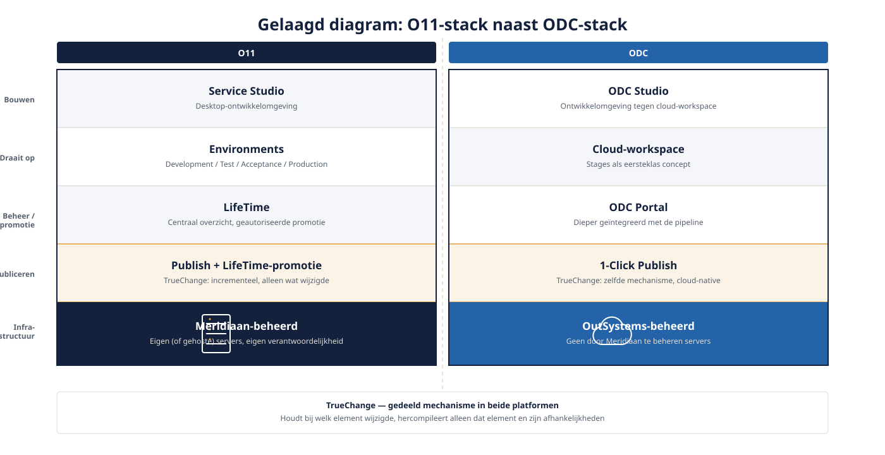
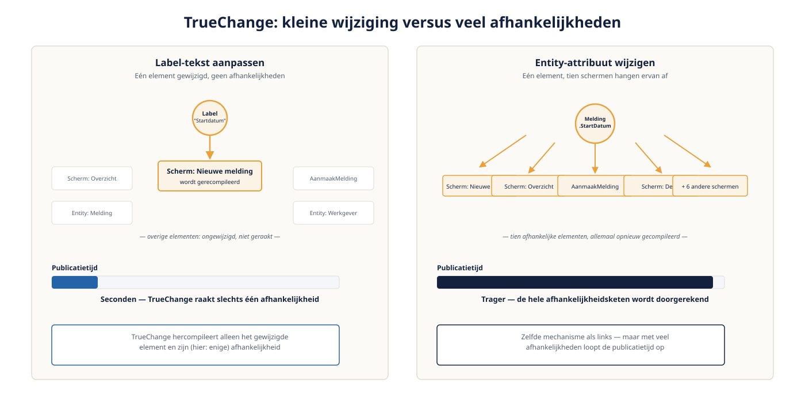

Deel 2 — Platformanatomie
Reader · Ductus-cursus OutSystems · Niveau 1 — Fundament · deel 2 van 30
2.1 De architectuur achter het scherm
Wanneer je in deel 1 VerzuimO11 en VerzuimODC aanmaakte, zag je twee vergelijkbare ontwikkelomgevingen. Achter dat scherm zit een fundamenteel verschillende infrastructuur, en die ken je moeten om straks — in niveau 2 en 3 — bewuste keuzes te maken over waar je nieuwbouw plaatst.
O11-stack: je code wordt in Service Studio gemodelleerd, gepubliceerd naar een Environment (Development/Test/Acceptance/Production), en de daadwerkelijke deployment en promotie tussen omgevingen verloopt via LifeTime, het centrale beheerportaal. Environments zijn fysieke of virtuele servers die Meridiaan zelf beheert of laat hosten.
ODC-stack: ODC Studio werkt rechtstreeks tegen een cloud-workspace. Er zijn geen door Meridiaan te beheren servers — OutSystems beheert de onderliggende infrastructuur. Promotie tussen stages verloopt via de ODC Portal, en publiceren gebeurt met 1-Click Publish: één handeling die build, deploy en (indien geconfigureerd) tests combineert.

2.2 TrueChange: hoe wijzigingen worden bijgehouden
TrueChange is het onderliggende mechanisme waarmee OutSystems (in beide platformen) precies bijhoudt wélke elementen van je applicatie zijn gewijzigd sinds de laatste publicatie — tot op het niveau van een individuele actie, entity-attribuut of schermelement. Dit is wat een publish snel maakt: het platform hercompileert niet de hele applicatie, maar alleen wat daadwerkelijk is aangeraakt en wat daarvan afhankelijk is.
Voor Verzuimmeldingen betekent dit: als je in dit deel een label-tekst aanpast, publiceert het platform in seconden. Pas wanneer je iets wijzigt waar veel van afhangt — een entity-attribuut waarnaar tien schermen verwijzen — zie je de publicatietijd oplopen, omdat TrueChange de afhankelijkheidsketen doorrekent.
Verschil O11 ↔ ODC: het mechanisme is identiek van opzet, maar in ODC is de feedback sneller zichtbaar dankzij de cloud-native buildinfrastructuur. In O11 is de publicatiesnelheid mede afhankelijk van de capaciteit van de Environment-server die Meridiaan zelf beheert.

2.3 Van Service Studio naar LifeTime (O11)
Service Studio is waar je bouwt. LifeTime is waar je beheert: hier zie je alle applicaties in het landschap, wie welke rechten heeft, en — cruciaal — hier verloopt de promotie van een applicatieversie van Development naar Test naar Production. Een developer publiceert zelf naar Development; promotie naar Production is bij Meridiaan een bewuste, geautoriseerde stap via LifeTime, uitgevoerd door iemand met de juiste rol (deel 19 gaat hier dieper op in).
2.4 Van ODC Studio naar de Portal (ODC)
De ODC Portal vervult een vergelijkbare rol als LifeTime, maar is dieper geïntegreerd met de cloud-native pipeline. Stages (bijvoorbeeld Development, Test, Production) zijn hier eerste-klas concepten binnen de workspace-structuur, en 1-Click Publish stroomlijnt wat in O11 een expliciete LifeTime-promotie is. Dat gemak heeft een keerzijde die in deel 19 aan bod komt: minder handmatige stappen betekent ook minder vanzelfsprekende controlemomenten, tenzij je die bewust inricht.
Kernpunten
- O11 draait op door Meridiaan beheerde Environments met LifeTime als centraal beheerportaal; ODC draait cloud-native met de ODC Portal en 1-Click Publish
- TrueChange is het gedeelde mechanisme achter snelle, incrementele publicaties in beide platformen
- Promotie tussen omgevingen is in O11 een expliciete LifeTime-stap; in ODC dichter geïntegreerd — met gevolgen voor governance die in deel 19 terugkomen